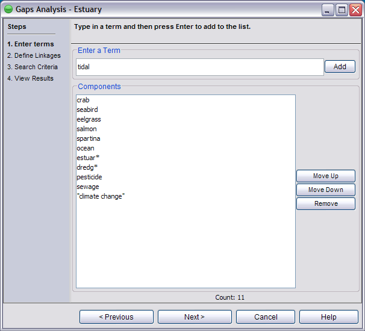

Terms (including phrases) are entered to represent ecosystem elements. Enter in each term that you want to represent as a component in your ecosystem. Click Add to add each component (term) to the list.

In the example above the term crab is entered to represent the ecosystem’s first component. Once the user pushes Add, crab is added to the list of components.
The following is an example of valid terms (components):
Use the Move Up and Move Down buttons to change the order of the elements. Once all components are added for your ecosystem model and are in the correct order, click Next.